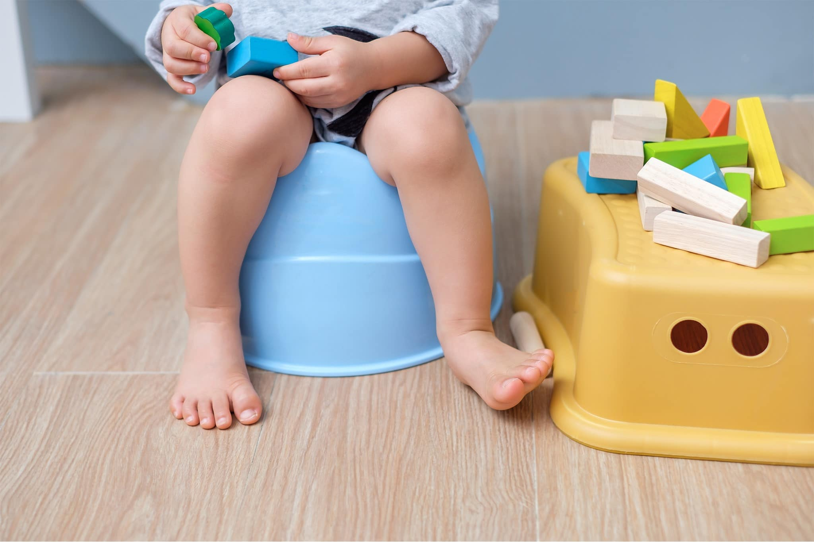

תהליך הגמילה הוא אינדיבידואלי. מרבית הילדים נגמלים בגיל שבין שנתיים לשלוש — בגיל הזה מפתח הילד את היכולת לשלוט בצרכיו. כאשר המהלך נעשה במועד המתאים מבחינה התפתחותית, הילדים נענים לאתגר ברצון ורוכשים את המיומנות בקלות יחסית.
גמילה שנדחית יתר על המידה עלולה לגרום עיכוב בהתפתחות הרגשית וקושי בתפקוד במסגרות חינוכיות. מאידך, כאשר ילד יתחיל תהליך גמילה שהוא עדיין אינו בשל לו, התהליך יימשך זמן רב יותר ויהיה פחות מוצלח — עם הרבה "פספוסים" ותסכולים. אל תיכנעו ללחצים ונסו להיות אובייקטיביים לגבי מידת המוכנות של ילדכם.
כיצד יודעים אם הילד מוכן?
בשלות קוגניטיבית:
- האם הילד יכול לבטא רצונות?
- האם הילד יכול להודיע שיש לו פיפי או קקי?
- האם הילד יכול להבין ולבצע הוראות פשוטות?
בשלות רגשית:
- האם הילד יכול לחכות ולדחות סיפוקים?
- האם הילד מוכן לנסות ולהתנסות בדברים חדשים ולא פוחד להיכשל?
- האם הילד מאמין בעצמו וביכולותיו?
- האם הילד מגלה רצון לעשות דברים לבד?
בשלות חברתית:
- הילד מגלה עניין — מדבר על ניקיון, נמשך לספרים בנושא, מבקש להתפנות בעצמו.
בשלות מוטורית:
- האם הילד יכול לקום ולשבת באופן עצמאי על סיר?
- האם הילד מסוגל להוריד מכנס ולפתוח חיתול?
הפעילו שיקול דעת לפני תחילת התהליך. כאשר מתרחשים שינויים בחיי הילד — הולדת אח, מעבר דירה, מעבר גן — מומלץ לחכות עם הגמילה. דאגו להתחיל כשאתם בטוחים שהילד וגם אתם מוכנים לתהליך.
איך מתחילים?
בשלב ראשון כדאי לשוחח עם כל המעורבים בחיי הילד ולבדוק יחד את מידת הבשלות. החליטו יחד מתי הזמן הטוב ביותר עבור כולם להתחיל. תאום ציפיות בין הגן לבית הוא מאוד משמעותי — כל הגורמים המטפלים צריכים להעביר מסר זהה בענייני הגמילה.
שיחה גלויה עם הילד — דברו איתו על הנושא ונסו להבחין האם הוא משתף פעולה. אפשר לדבר על ילד אחר שנגמל לאחרונה בגן ולשאול את ילדכם האם הוא גם רוצה לעשות פיפי בסיר. חשוב לשמוע מה הילד חושב, ובמידה שהוא מתנגד בתוקף — כדאי לחכות עד שיהיה מוכן לשתף פעולה. ככל שהילד בשל יותר, כך התהליך יעבור ביתר קלות.
בחירה ועידוד
הבחירה היא כלי שימושי שבאמצעותו הילד ירגיש משמעותי, חשוב ועצמאי. לדוגמה, לקחת את הילד לבחור יחד את הסיר לפי הצבע שהוא רוצה.
תמכו בילדכם. עודדו אותו כשהוא מצליח, אבל אל תכעסו כשהוא מפספס. כשהפעוט מצליח לעשות את צרכיו בסיר, עודדו אותו והחמיאו לו — אך אל תעשו מזה עניין גדול מדי כדי לא להציב בפניו רף גבוה מדי. הזכירו לו שהוא מתנהג כמו בוגר.
בתהליך הגמילה ישנם הרבה פספוסים ונסיגות. תפקיד ההורים הוא לעודד את ילדם, לחבר אותו לכוחות שלו ולהראות לו את הצלחותיו ואת הדרך שעשה. דווקא ברגעים שבהם הילד נכשל, חשוב לחזק אותו ולעודד אותו כדי שיחזור להאמין ביכולת שלו להצליח.
היחס והתגובה שלכם ההורים להצלחות ולכישלונות ישפיעו מאוד על תהליך הגמילה של הילד.
בהצלחה, אורית.
מעוניינים לדעת עוד? אורית זמינה לשאלות ופגישות ייעוץ.
צרו קשר